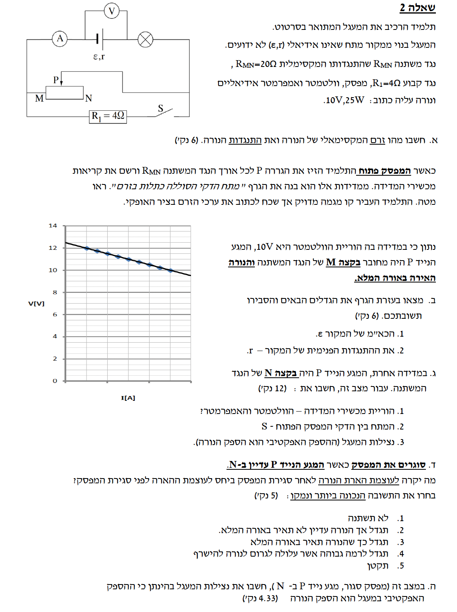

פתרון מוסבר: מעגל זרם ישר עם נגד משתנה

לא ניתן לטעון את התמונה המקורית (question-image.png)
סעיף א': חישוב התנגדות הנורה והזרם המקסימלי דרכה
א. מה נתון:
- על הנורה רשומים הערכים הנומינליים (ערכי היצרן המקסימליים): מתח נומינלי \(V_L = 10 \text{ V}\), והספק נומינלי \(P_L = 25 \text{ W}\). הנתונים מופיעים ביחידות הסטנדרטיות (MKS), לכן אין צורך בהמרה.
ב. מה מחפשים:
את הזרם המקסימלי המותר לעבור דרך הנורה (\(I\)) ואת התנגדות הנורה (\(R_L\)).
ג. נוסחאות ועקרונות בשימוש:
נשתמש בחוק אוהם ובנוסחת ההספק החשמלי הנתונות בדף הנוסחאות:
\( P = IV \)
\( V = IR \)
ד. הצבה ופתרון:
נציב תחילה את הערכים בנוסחת ההספק כדי לחלץ את הזרם המקסימלי המותר (אשר מפיק את ההספק הנומינלי במתח הנומינלי):
\[ 25 = I \cdot 10 \implies I = \frac{25}{10} = 2.5 \text{ A} \]
כעת, נציב את הזרם שקיבלנו יחד עם המתח לתוך חוק אוהם כדי לחשב את התנגדות הנורה:
\[ 10 = 2.5 \cdot R_L \implies R_L = \frac{10}{2.5} = 4 \text{ }\Omega \]
הזרם המקסימלי של הנורה הוא \( 2.5 \text{ A} \), והתנגדות הנורה היא \( 4 \text{ }\Omega \).
סעיף ב': מציאת הכא"מ וההתנגדות הפנימית
א. מה נתון:
- מפסק S פתוח. לכן, הזרם עובר מהסוללה דרך הנורה, משם לנקודה P ויוצא דרך נקודה M בחזרה לסוללה.
- גרף מתח ההדקים \(V\) כפונקציה של הזרם \(I\). על הגרף נראה שחיתוך ציר ה-Y (כאשר הזרם \(I = 0 \text{ A}\)) מתרחש בדיוק ב- \(V = 12.5 \text{ V}\) (בין השנתות של 12 ל-14).
- נתון חשוב בטקסט: כאשר הוריית הוולטמטר היא \(10 \text{ V}\), המגע P מחובר בקצה M (כך שהתנגדות הנגד המשתנה במעגל היא אפס) והנורה מאירה באורה המלא. כלומר, בנקודה זו הזרם במעגל הוא הזרם המקסימלי של הנורה שחושב בסעיף א': \(I = 2.5 \text{ A}\). נקודה זו על הגרף היא לפיכך \((2.5, 10)\).
ב. מה מחפשים:
1. את הכא"מ (הכוח האלקטרו-מניע) של הסוללה, \(\varepsilon\).
2. את ההתנגדות הפנימית של הסוללה, \(r\).
ג. נוסחאות ועקרונות בשימוש:
\( V_{ab} = \varepsilon - Ir \)
עקרון: מנוסחה זו ניתן לראות שהגרף של \(V\) כתלות ב-\(I\) הוא קו ישר שבו נקודת חיתוך ציר ה-Y היא \(\varepsilon\), ושיפוע הישר הוא \(-r\).
ד. הצבה ופתרון:
1. מציאת הכא"מ (\(\varepsilon\)):
נציב את נקודת החיתוך עם ציר ה-Y \((I=0, V=12.5)\) במשוואת מתח ההדקים:
\[ 12.5 = \varepsilon - 0 \cdot r \implies \varepsilon = 12.5 \text{ V} \]
2. מציאת ההתנגדות הפנימית (\(r\)):
נציב את הנקודה השנייה \((I=2.5, V=10)\) ביחד עם הכא"מ שמצאנו לתוך אותה המשוואה:
\[ 10 = 12.5 - 2.5 \cdot r \]
\[ 2.5r = 12.5 - 10 \]
\[ 2.5r = 2.5 \implies r = 1 \text{ }\Omega \]
הכא"מ של המקור הוא \( \varepsilon = 12.5 \text{ V} \), וההתנגדות הפנימית שלו היא \( r = 1 \text{ }\Omega \).
סעיף ג': חישובים כאשר P בקצה N (מפסק פתוח)
א. מה נתון:
- המפסק S עדיין פתוח, כלומר הענף התחתון עם הנגד \(R_1\) מנותק.
- המגע הנייד P נמצא בקצה N של הנגד המשתנה. כלומר, הזרם עובר דרך כל הנגד \(R_{MN}\), שהתנגדותו המקסימלית נתונה: \(R_{MN} = 20 \text{ }\Omega\).
- התנגדות הנורה: \(R_L = 4 \text{ }\Omega\).
- נתוני הסוללה: \(\varepsilon = 12.5 \text{ V}\), \(r = 1 \text{ }\Omega\).
ב. מה מחפשים:
1. קריאות מכשירי המדידה (מד הזרם והוולטמטר).
2. המתח בין הדקי המפסק הפתוח S.
3. נצילות המעגל במצב זה.
ג. נוסחאות ועקרונות בשימוש:
\( R_T = \sum_i R_i \)
\( V = IR \)
\( V_{ab} = \varepsilon - Ir \)
\( \eta = \frac{P_{eff}}{P_{in}} \)
עקרונות: מתח ההדקים הוא המתח הנופל על הרכיבים החיצוניים. מכיוון שאין זרם בענף המפסק S, אין עליו נפילת מתח דרך נגדים באותו ענף, ולכן הפוטנציאל בקצות המפסק מוכתב על ידי הנקודות אליהן הוא מחובר במעגל הראשי.
ד. הצבה ופתרון:
1. קריאות מכשירי המדידה:
נחשב את ההתנגדות הכוללת של המעגל הטורי (הסוללה, הנורה, והנגד המשתנה בשלמותו):
\[ R_{total} = r + R_L + R_{MN} = 1 + 4 + 20 = 25 \text{ }\Omega \]
קריאת מד הזרם תהיה הזרם הראשי במעגל על פי חוק אוהם הכולל (\(I = \frac{\varepsilon}{R_{total}}\)):
\[ I = \frac{12.5}{25} = 0.5 \text{ A} \]
קריאת הוולטמטר (מתח ההדקים):
\[ V = \varepsilon - Ir = 12.5 - 0.5 \cdot 1 = 12 \text{ V} \]
2. המתח בין הדקי המפסק (S):
הדק אחד של המפסק מחובר לנקודה N. נחשב את הפוטנציאל בנקודה זו. הזרם הראשי (\(0.5 \text{ A}\)) זורם מנקודה N לנקודה M (שמחוברת להדק השלילי של הסוללה, ולכן אפשר לקבוע את הפוטנציאל שלה כאפס, \(V_M = 0\)). נפילת המתח על הנגד המשתנה היא:
\[ V_{MN} = I \cdot R_{MN} = 0.5 \cdot 20 = 10 \text{ V} \]
מכאן ש- \(V_N = 10 \text{ V}\). ההדק השני של המפסק מחובר דרך הנגד \(R_1\) להארקה (נקודה M). כיוון שהמפסק פתוח, לא זורם זרם דרך \(R_1\) ואין עליו נפילת מתח, ולכן הפוטנציאל בצידו השני של המפסק הוא אפס. הפרש הפוטנציאלים (המתח) על המפסק הוא לפיכך \(10 \text{ V}\).
3. נצילות המעגל:
נצילות מוגדרת כיחס בין ההספק המועיל (המנוצל על ידי הרכיבים החיצוניים) להספק הכולל שמספק המקור. יחס זה שווה גם ליחס בין מתח ההדקים לכא"מ:
\[ \eta = \frac{V_{terminal}}{\varepsilon} = \frac{12}{12.5} = 0.96 \]
באחוזים, הנצילות היא \(96\%\).
1. מד הזרם: \( 0.5 \text{ A} \), וולטמטר: \( 12 \text{ V} \).
2. המתח בין הדקי המפסק S: \( 10 \text{ V} \).
3. נצילות המעגל: \( 96\% \).
סעיף ד': סגירת המפסק S
א. מה נתון:
- מפסק S נסגר. הנגד \(R_1 = 4 \text{ }\Omega\) נכנס לפעולה במעגל.
- המגע הנייד P עדיין נמצא בנקודה N, כך שהנגד המשתנה עדיין מספק התנגדות של \(20 \text{ }\Omega\).
- מהשרטוט ניתן לראות שלאחר סגירת S, הזרם המגיע מהנורה לנקודה N מתפצל: חלקו עובר דרך הנגד המשתנה אל M, וחלקו עובר דרך S והנגד \(R_1\) חזרה לנקודה M. לכן, הנגד המשתנה ו- \(R_1\) מחוברים כעת במקביל.
ב. מה מחפשים:
לבחור את האפשרות הנכונה המתארת מה יקרה לעוצמת הארת הנורה לעומת המצב הפתוח, ולנמק.
ג. נוסחאות ועקרונות בשימוש:
\( \frac{1}{R_T} = \sum_i \frac{1}{R_i} \)
עקרון: הוספת נגד במקביל למעגל מורידה את ההתנגדות השקולה הכוללת, וכתוצאה מכך מגדילה את הזרם הראשי היוצא מהסוללה (ועובר דרך הנורה).
ד. הצבה ופתרון:
נחשב את ההתנגדות השקולה של המקביל (הנגד המשתנה ו- \(R_1\)). ניתן לפתוח את הנוסחה כך: \(R_p = \frac{R_1 \cdot R_2}{R_1 + R_2}\):
\[ R_p = \frac{20 \cdot 4}{20 + 4} = \frac{80}{24} = \frac{10}{3} \text{ }\Omega \approx 3.33 \text{ }\Omega \]
נחשב את ההתנגדות הכוללת החדשה של המעגל ואת הזרם החדש שיזרום דרך הנורה:
\[ R_{new\_total} = r + R_L + R_p = 1 + 4 + \frac{10}{3} = \frac{3 + 12 + 10}{3} = \frac{25}{3} \text{ }\Omega \approx 8.33 \text{ }\Omega \]
\[ I_{new} = \frac{\varepsilon}{R_{new\_total}} = \frac{12.5}{\frac{25}{3}} = \frac{12.5 \cdot 3}{25} = 0.5 \cdot 3 = 1.5 \text{ A} \]
בסעיף ג' (לפני סגירת המפסק) הזרם דרך הנורה היה \(0.5 \text{ A}\). כעת הזרם עלה ל- \(1.5 \text{ A}\). משום שהזרם עלה, הספק הנורה (\(P = I^2 R\)) גדל, ולכן הנורה תאיר חזק יותר.
עם זאת, בסעיף א' מצאנו שהזרם המקסימלי שהנורה צריכה כדי להאיר באורה המלא הוא \(2.5 \text{ A}\). כיוון ש- \(1.5 \text{ A} < 2.5 \text{ A}\), הנורה עדיין לא תאיר באורה המלא וכמובן לא תישרף.
התשובה הנכונה היא: (2) עוצמת הארת הנורה תגדל אך הנורה עדיין לא תאיר באורה המלא.
(נימוק: הזרם עלה מ- \(0.5\text{A}\) ל- \(1.5\text{A}\) בעקבות ירידת ההתנגדות, אך עדיין קטן מזרמה הנומינלי \(2.5\text{A}\)).
סעיף ה': חישוב נצילות המעגל תחת הגדרה ספציפית
א. מה נתון:
- אנו נמצאים באותו המצב כמו בסעיף ד': מפסק סגור ומגע P ב-N. הזרם הראשי שחושב הוא \(I = 1.5 \text{ A}\).
- הוגדר במפורש עבור סעיף זה: "ההספק האפקטיבי במעגל הוא הספק הנורה" בלבד. (כלומר, שאר הנגדים אינם נחשבים כהספק "מועיל").
ב. מה מחפשים:
לחשב את נצילות המעגל תחת ההגדרה החדשה.
ג. נוסחאות ועקרונות בשימוש:
לחישוב ההספק נשתמש בנוסחאות שפותחו מדף הנוסחאות המשלבות את \(P=IV\) עם חוק אוהם \(V=IR\):
\( P = I^2 R \)
\( \eta = \frac{P_{eff}}{P_{in}} \)
ד. הצבה ופתרון:
נחשב את ההספק האפקטיבי (הספק הנורה) בעזרת הזרם והתנגדות הנורה (\(R_L = 4 \text{ }\Omega\)):
\[ P_{lamp} = I^2 \cdot R_L = (1.5)^2 \cdot 4 = 2.25 \cdot 4 = 9 \text{ W} \]
נחשב את ההספק הכולל המושקע על ידי הסוללה (\(P_{in}\)):
\[ P_{in} = \varepsilon \cdot I = 12.5 \cdot 1.5 = 18.75 \text{ W} \]
נחשב את הנצילות לפי היחס ביניהם:
\[ \eta = \frac{9}{18.75} = 0.48 \]
נצילות המעגל, תחת ההגדרה הנתונה, היא: \( 48\% \).